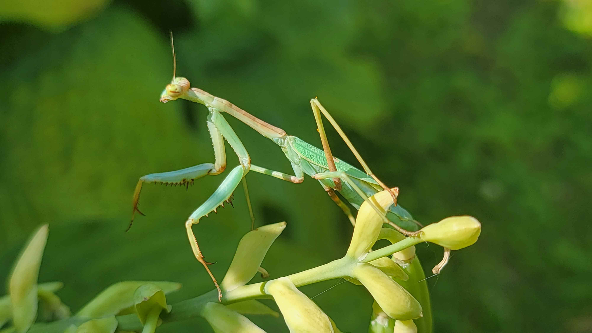

Info & Policies
Shipping Policies
- I only ship within the United States. I will not ship internationally. I take payment through both PayPal and Venmo. A QR code will be sent to you after an order is placed.
- I ship Monday-Wednesday using UPS, FedEx, or USPS depending on the purchase. I generally ship using UPS 2nd Day Air, but will Next Day Air a fragile species. I will also ship overnight upon request. All spiders should be shipped using FedEx, as it is illegal to ship using other carriers.
- Please note that I have a $20 minimum purchase policy due to the costs associated with proper live shipping. If you intend to buy bulk, please notify me ahead of time so I have enough time to procure a suitable-sized box.
- I offer a Live Arrival Guarantee (LAG). In case of any deaths, message immediately upon opening the package with clear proof of death within 2 hours for a replacement or refund. In the event that your bugs arrive worse for wear, send clear proof of their condition. If they pass within 2 days of receipt, you are still eligible for a replacement or refund. The cost of shipping and handling is nonrefundable.
- I am not responsible for lost packages, or mistakes made by shipping carriers. It is your responsibility to provide me with the correct name and address.
- In case of poor weather, some planned shipments may be put on hold. Shipments will resume when conditions are safe. I will always check your local weather before agreeing to ship. Sometimes I may request a package be held for pickup if it is too hot/cold to ship to your door.
- Large order volumes may sometimes delay shipping.
- Invoices will be provided with each order. If you would like to see it prior to receiving your paper copy, I can send a screenshot.
- In-person transactions will reflect expo pricing to account for lack of shipping cost. Inquire about these prices if you are meeting me in person. I am located in Massachusetts (MA).
Husbandry Policies
- All bugs sold are Captive Bred or Captive Born. I am a big proponent of retaining captive populations of species to reduce rates of mass collection. DO NOT RELEASE any exotic, designer morph, or otherwise non-native animals purchased into the wild.
- I will sometimes responsibly wild collect species for captive breeding projects, but they will never be listed for sale on my website. Contact me if interested.
- While sold oothecae should be fertile, there is no guarantee they will hatch. Do your research, but feel free to ask me for advice. Similarly, all paired adult females should be fertile, but there is no guarantee they will lay.
- I will not sell or ship i1s. First instar nymphs are fragile and require constant feeding and hydration. It is not recommended to ship them.
- I will not sell the Northern Walking Stick (D. femorata) outside of its native range. I will check your zip code to confirm you are within the appropriate range. In a similar fashion, not every state is roach-friendly. Check your local laws before purchasing.
- Living animals grow over time. If you place an order and your chosen individual molts, the price will reflect the new instar. Prices may be subject to change.
- Updates on animals you have purchased from me are welcome and very appreciated! Please feel free to contact me reguarding anything your critters have been up to! I'd love to watch them grow up with you.
- I am willing to collaborate with other breeders. If a pairing is successful, I wish to receive eggs or young in return. If I pair in turn, and it is successful, I will send you eggs or young. Check my ISO to see if there are any mates that I’m currently looking for!
- There is always a potential to get extras when you order from me, plus a free sticker and business card is included in every order. If you do not want freebies, you can opt out by telling me.
